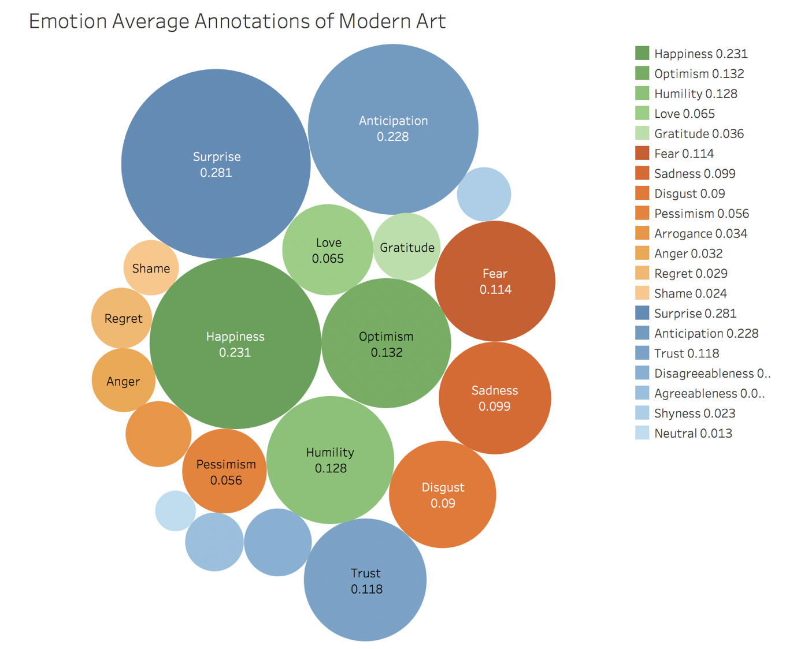
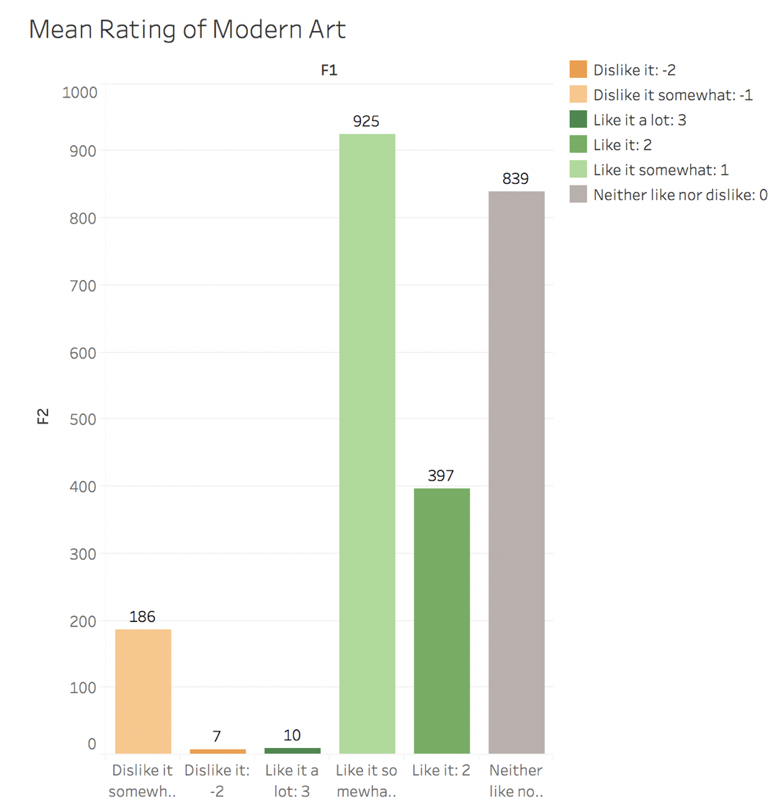

This bubble chart shows the emotion average annotation of Modern Art. In this visualization, colors of green represent positive emotions; colors of orange represent negative emotions and colors of blue represent other emotions--mixed or neutral. The color inside each emotion type is from dark to light according to the average annotations.
From this chart, it is clear that annotators provided the most consistent labels for positive emotions including surprise, anticipation and happiness. Surprise and anticipation belong to other or mixed emotions. So other or mixed emotions are the main emotion of the modern art.
At the same time, positive emotions still have an important position. Happiness, optimism and humility have relatively high average scores.
This bar chart shows How did the annotators like the piece of Moderb Art on average (-3 (strongly dislike) to 3 (strongly like)).
TThe colors of green mean like, gray means neither like nor dislike and the colors of oranges mean dislike. The colors change from dark to light according to how much the annotators like the piece of art work.
This chart shows that the majority of annotators chose “ Like it somewhat’ or “ Neither like nor Dislike it”. Considering that many annotators tended to choose “like” because of showing respect to artists’ work, it looks like the work of Modern Art is not very attracted to people.
